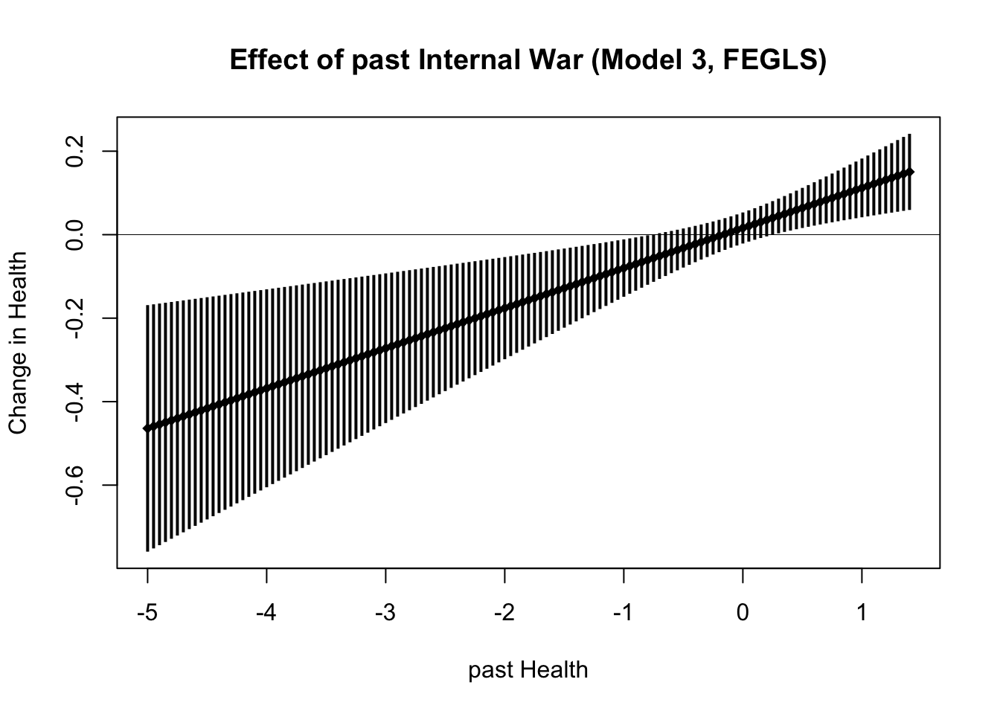
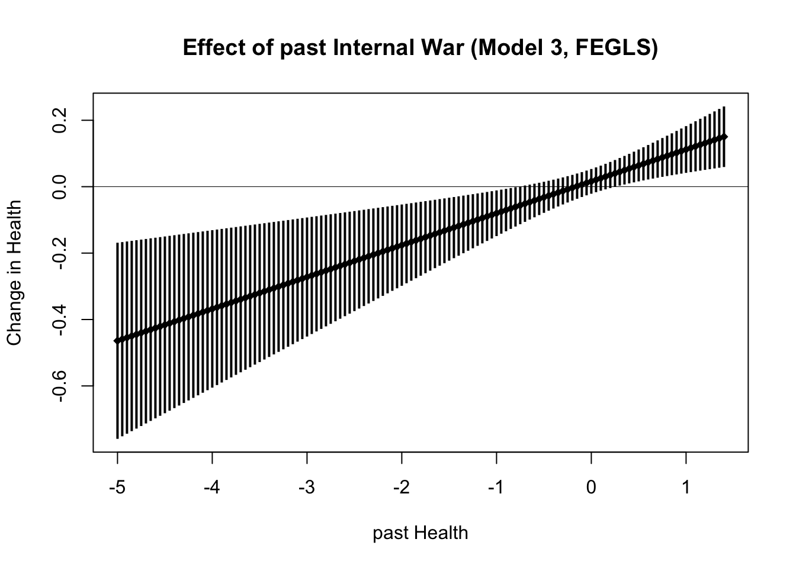
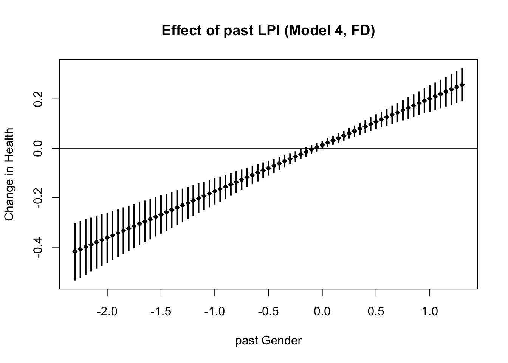
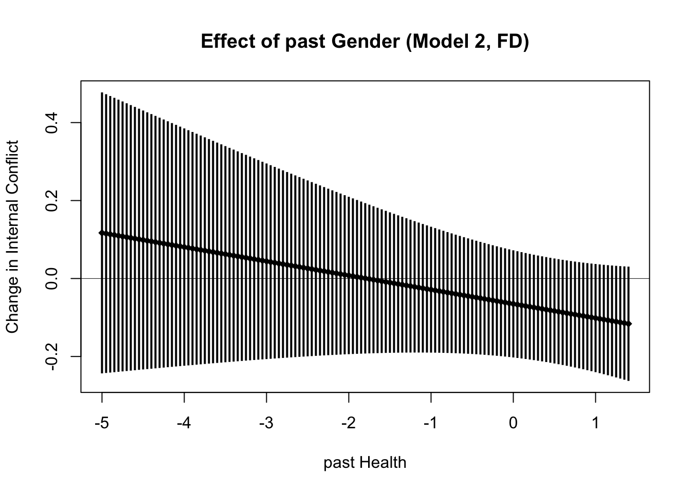
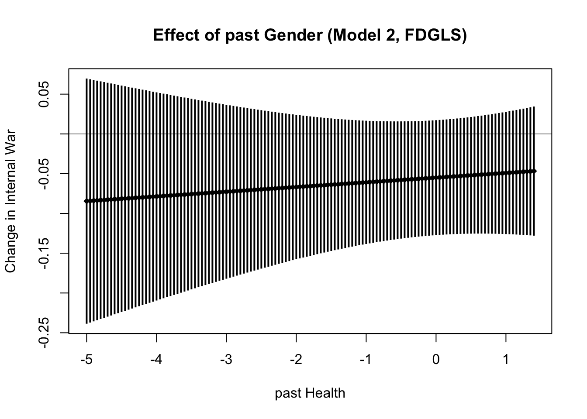
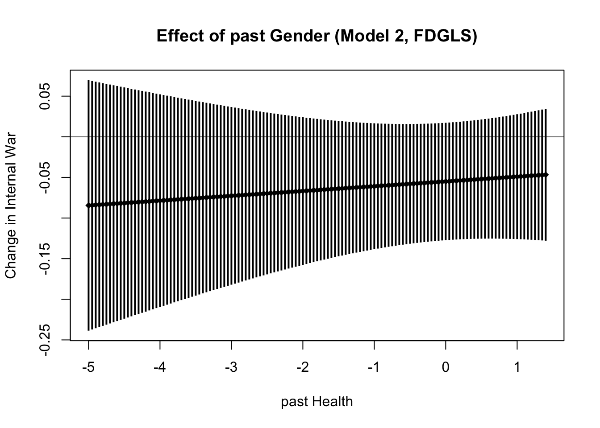
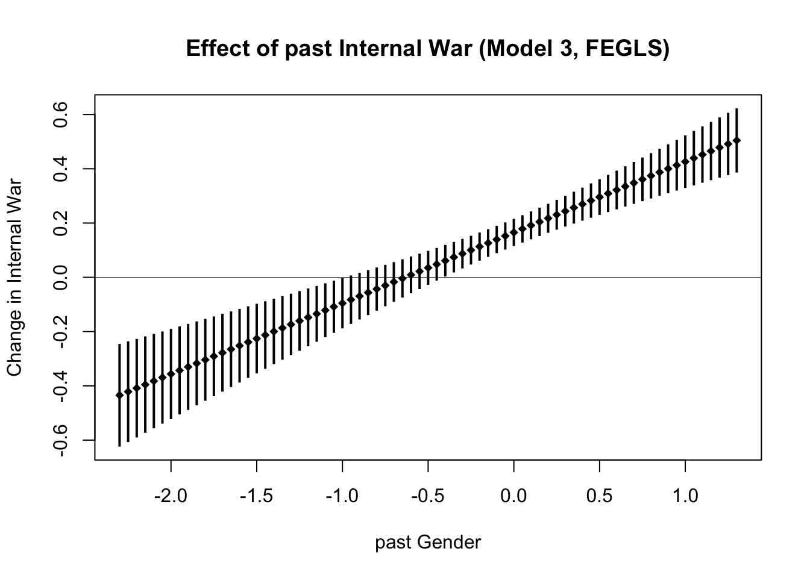
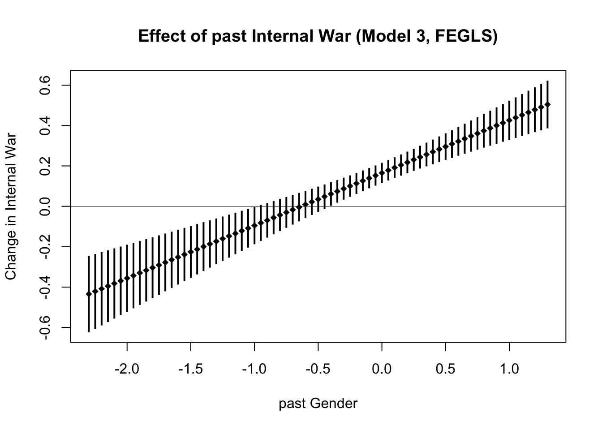

New Panel Regressions
IsTrue <- function(x) { !is.na(x) & x }
load("_data/LSCMWG_working_class.RData")
vars <- c("pc_rgdpe_pwt", "growth_rgdpe_pwt", "pop_wpp", "pop_density_wpp", "imr_wpp",
"ufmr_wpp", "life_exp_wpp", "daly_ihme", "asfr_adol_wpp", "mys_age_ratio_ihme",
"mys_pop_ratio_ihme", "mys_ratio_hdr", "labor_mod_ratio15_ilo", "gii_hdr",
"conflict_internal", "war_internal", "conflict_non_state", "conflict_one_sided",
"deaths_all_int_rate", "deaths_civilians_int_rate", "deaths_civilians_osv_rate",
"deaths_all_nsc_rate", "deaths_civilians_nsc_rate", "deaths_all_ucdp_rate",
"hom_odcwho_rate", "latentmean_fariss", "v2cltort", "v2clkill", "v2caviol",
"v2x_polyarchy", "v2x_libdem", "v2x_liberal", "v2x_partipdem", "v2x_partip")
select_lg <- c(vars, names(df)[names(df) %in% paste("lg", vars, sep = "_")])
select <- c(select_lg, names(df)[names(df) %in% paste(select_lg, "avg", sep = "_")])
dfp <- df[df$year %in% c(seq(1965, 2015, 5), 2018),
c("country", "year", "period", "health_class", "gender_class", "class",
"class_vv", "class_low", "class_HG", "class_GH", "class_mid", "class_upp", select)]
dfp$life_exp_wpp_avg_scaled <- as.numeric(scale(dfp$life_exp_wpp_avg))
dfp$imr_wpp_avg_scaled <- as.numeric(scale(dfp$imr_wpp_avg))
dfp$mys_age_ratio_ihme_avg_scaled <- as.numeric(scale(dfp$mys_age_ratio_ihme_avg))
dfp$asfr_adol_wpp_avg_scaled <- as.numeric(scale(dfp$asfr_adol_wpp_avg))
dfp$health <- rowMeans(dfp[, c("life_exp_wpp_avg_scaled", "imr_wpp_avg_scaled")], na.rm = FALSE)
dfp$gender <- rowMeans(dfp[, c("mys_age_ratio_ihme_avg_scaled", "asfr_adol_wpp_avg_scaled")], na.rm = FALSE)
dfp <- dfp[, names(dfp)[!names(dfp) %in% select_lg]]
# names(dfp)[!str_detect(names(dfp), "_avg")]
names(dfp) <- str_replace(names(dfp), "_avg", "")
dfp_lag <- dfp <- dfp[, names(dfp) != "period"]
names(dfp_lag)[!names(dfp_lag) %in% c("country", "year", "period")] <-
paste("lag", names(dfp_lag)[!names(dfp_lag) %in% c("country", "year", "period")], sep = "_")
number_of_lags <- ifelse(params$lags %in% 1:3, params$lags, 1)
# number_of_lags <- 1
dfp_lag$year <- dfp_lag$year + 5*number_of_lags
dfp_lag$year[dfp_lag$year == 2020] <- 2018
dfp <- merge(dfp, dfp_lag, by = c("country", "year"), all.x = TRUE)
dfp <- dfp[dfp$year >= 1965 + 5*number_of_lags, ]
# dfp <- dfp[dfp$year >= 1975 & dfp$year <= 2015 & !(dfp$country %in% c("Montenegro", "Serbia")), ]
dfp <- dfp[dfp$year >= params$begin & dfp$year <= params$end & !(dfp$country %in% c("Montenegro", "Serbia")), ]
temp <- dfp %>%
select(country, year, lag_lg_pc_rgdpe_pwt, lag_lg_pop_density_wpp,
lag_v2x_polyarchy, lag_v2x_partip, lag_v2x_liberal,
lag_conflict_internal, lag_latentmean_fariss,
lag_health, lag_gender) %>%
na.omit()
# table(data.frame("T" = tapply(temp$year, temp$country, length)))
# tapply(temp$year, temp$country, length)[tapply(temp$year, temp$country, length) < 4]
# unique(temp$country)
# functions
source("~/Documents/Work/Analyses/functions/RegressionFig.R")
RunModels <- function(equations,
estimators_to_show = c("fe", "fd", "fegls", "fdgls"),
labelspace = 18,
pdfname = NULL,
pdfswitch = params$pdfs
){
if(is.null(names(equations))) names(equations) <- paste("m", 1:length(equations), sep = "")
PanelModel <- function(equation, estimator, estimation_function, effect = "individual", ses = "se") {
fit <- do.call(estimation_function,
args = list(formula = equation, data = dfp, index = c("country", "year"),
model = estimator, effect = effect), quote = TRUE)
est <- data.frame(var = names(fit$coefficients), est = fit$coefficients, se = sqrt(diag(fit$vcov)))
if(class(fit)[1] == "plm" & "crse" %in% ses & "se" %in% ses) {
est$crse <- sqrt(diag(sandwich::vcovHC(fit, method = "arellano", type = "HC0", cluster = "group")))
}
if(class(fit)[1] == "plm" & !("se" %in% ses)) {
est$se <- sqrt(diag(sandwich::vcovHC(fit, method = "arellano", type = "HC0", cluster = "group")))
}
info <- list(N = nrow(fit[["model"]]),
n = length(unique(attributes(fit$model)$index$country)),
T = noquote(paste(range(table(attributes(fit$model)$index$country)), collapse = "-")),
years = noquote(paste(range(unique(as.character(attributes(fit$model)$index$year))),
collapse = "-")))
if(class(fit)[1] == "plm") info$rsquared = round(abs(summary(fit)[["r.squared"]][["adjrsq"]]), 3)
if(class(fit)[1] == "pggls") info$rsquared = round(abs(summary(fit)[["rsqr"]]), 3)
# if(class(fit)[1] == "plm") info$ftest <- summary(fit)[["fstatistic"]][["p.value"]]
return(list(fit = fit, est = est, info = info))
}
estlist <- lapply(c(ols = "pooling", fe = "within", fd = "fd", re = "random"), function(estimator) { # estimator = "within"
lapply(equations, function(equation) {
PanelModel(equation = equation, estimator = estimator, estimation_function = plm::plm, ses = "crse")
})
})
estlist <- c(estlist, lapply(c(ggls = "pooling", fegls = "within", fdgls = "fd"), function(estimator) { # estimator = "within" #
lapply(equations, function(equation) {
PanelModel(equation = equation, estimator = estimator, estimation_function = plm::pggls, ses = "se")
})
}) )
test_args_list <- list(
list(what = "unit effects", testfunction = "pFtest", x_estimator = "fe", z_estimator = "ols"),
list(what = "unit effects", testfunction = "plmtest", x_estimator = "ols"),
list(what = "unit effects", testfunction = "plmtest", x_estimator = "ols", effect = "time"),
list(what = "unit effects", testfunction = "plmtest", x_estimator = "ols", effect = "twoways"),
list(what = "correlated effects", testfunction = "phtest", x_estimator = "fe", x2_estimator = "re"),
list(what = "correlated effects", testfunction = "phtest", x_estimator = "fegls", x2_estimator = "ggls", note = "(FGLS)"),
## any type of serial corr. of time-decaying kind in the idiosyncratic error terms
list(what = "idiosyncratic serial corr.", testfunction = "pwtest", x_estimator = "ols"),
## serial corr.: detecting features of persistence
list(what = "persistent serial corr.", testfunction = "pbsytest", x_estimator = "ols", test = "j"),
list(what = "persistent serial corr.", testfunction = "pbsytest", x_estimator = "ols", test = "re"),
list(what = "persistent serial corr.", testfunction = "pbsytest", x_estimator = "ols", test = "ar"),
list(what = "persistent serial corr.", testfunction = "pbltest", x_estimator = "re", alternative = "onesided"),
list(what = "traditional serial corr.", testfunction = "pwartest", x_estimator = "fe"),
list(what = "traditional serial corr.", testfunction = "pwfdtest", x_estimator = "fd", h0 = "fd"),
list(what = "traditional serial corr.", testfunction = "pwfdtest", x_estimator = "fd", h0 = "fe")
)
names(models) <- models <- unique(unlist(lapply(estlist, names)))
results <- lapply(test_args_list, function(test_args) {
tests <- lapply(models, function(modelname, args = test_args) {
args$x <- estlist[[args$x_estimator]][[modelname]]$fit
if("z_estimator" %in% names(args)) args$z <- estlist[[args$z_estimator]][[modelname]]$fit
if("x2_estimator" %in% names(args)) args$x2 <- estlist[[args$x2_estimator]][[modelname]]$fit
exclude <- c("testfunction", "x_estimator", "z_estimator", "note")
test_results <- do.call(args$testfunction, args = args[!names(args) %in% exclude], quote = TRUE)
# test_results$method <- paste(args$testfunction, test_results$method, sep = ": ")
if("note" %in% names(args)) test_results$method <- paste(test_results$method, args$note)
data.frame(what = args$what, test_results[c("method", "alternative", "p.value")])
})
tests <- lapply(names(tests), function(modelname) {
names(tests[[modelname]])[4] <- modelname
return(tests[[modelname]])
})
Reduce(f = function(...) merge(..., by = c("what", "method", "alternative"), all = TRUE), x = tests)
})
tests <- do.call(rbind, results)
tests[, !names(tests) %in% c("what", "method", "alternative")] <-
format(round(tests[, !names(tests) %in% c("what", "method", "alternative")], 3), nsmall = 3)
tests <- tests[, c("method", names(tests)[!names(tests) %in% c("method", "alternative", "what")], "alternative", "what")]
estimators_to_show <- estimators_to_show[estimators_to_show %in% names(estlist)]
if(pdfswitch & !is.null(pdfname)) pdf(file = paste("_figures/", pdfname, ".pdf", sep = ""), width = 16, height = 9)
RegressionFig(estlist = estlist[estimators_to_show],
labels = c(ols = "pooling models", fe = "FE models", fd = "FD models", re = "RE models",
ggls = "GGLS models", fegls = "FEGLS models", fdgls = "FDGLS models")[estimators_to_show],
labelspace = labelspace)
if(pdfswitch & !is.null(pdfname)) dev.off()
output <- list(ests = estlist, tests = tests)
return(output)
}
InteractionEffect <- function(
effect , # name of variable for effect calculation
interaction , # name of single interaction variable
modvalues = c(0, 1), # values of moderator variable; default is for dummy variable
coefs ,
varcov
){### general function for marginal effects calculated from coefficients
if(is.null(colnames(varcov))) rownames(varcov) <- colnames(varcov) <- names(coefs)
if(is.null(names(modvalues))) names(modvalues) <- modvalues
eff <- coefs[effect]
int <- coefs[interaction]
est <- eff + int * modvalues
vcv <- varcov[effect, effect] + modvalues^2 * varcov[interaction, interaction] + 2 * modvalues * varcov[effect, interaction]
se <- sqrt(vcv)
return(list(est = est, se = se))
}
IntPlot <- function(fit, eff_var,
int_vars = c(low = paste(eff_var, ":lag_class_low", sep = ""),
"G>H" = paste(eff_var, ":lag_class_GH", sep = ""),
"H>G" = paste(eff_var, ":lag_class_HG", sep = ""),
mid = paste(eff_var, ":lag_class_mid", sep = ""),
upp = paste(eff_var, ":lag_class_upp", sep = "")),
modvalues = c(0, 1),
ref_cat = NULL,
xlabel = "",
ylabel = "",
title_addon = "",
title = paste("Effect of ", names(eff_var)[1], title_addon, sep = ""),
pdfname = NULL,
pdfswitch = params$pdfs
){
confidence = 0.95
zscore <- qnorm(1 - ((1 - confidence)/2))
if (class(fit)[1] == "pggls") {
varcov <- vcov(fit)
} else {
varcov <- sandwich::vcovHC(fit, method = "arellano", type = "HC0", cluster = "group")
}
int_vars <- int_vars[int_vars %in% names(fit$coef)]
ests <- lapply(int_vars, function(int_var) {
InteractionEffect(coefs = fit$coef, varcov = varcov, effect = eff_var, interaction = int_var, modvalues = modvalues)
})
ref <- unique(lapply(ests, function(toplevel) lapply(toplevel, function(x) x[1])))
if(is.null(ref_cat)) ref_cat <- c("low", "mid")[!c("low", "mid") %in% names(int_vars)]
if(length(ref) == length(ref_cat)) {
names(ref) <- ref_cat
ests <- lapply(ests, function(toplevel) lapply(toplevel, function(x) x[-1]))
ests <- c(ref, ests)
}
ests <- do.call(rbind, lapply(ests, function(x) {
cilower <- x$est - zscore * x$se
ciupper <- x$est + zscore * x$se
return(data.frame(est = x$est, cilower = cilower, ciupper = ciupper))
}))
ylimits <- range(list(ests, 0))
if(length(int_vars) > 1) {
xvalues <- 1:nrow(ests)
xlimits <- c(0.5, nrow(ests) + 0.5)
} else {
xvalues <- as.numeric(rownames(ests))
xlimits <- range(as.numeric(rownames(ests)))
}
if(pdfswitch & !is.null(pdfname)) pdf(file = paste("_figures/", pdfname, ".pdf", sep = ""), width = 8, height = 4.5)
# par(mar = c(5, 4, 1, 1) + 0.1)
plot(x = xvalues,
y = ests$est,
pch = 18,
ylim = ylimits,
xlim = xlimits,
ylab = ifelse(ylabel != "", paste("Change in", ylabel), ""),
xlab = xlabel,
xaxt = ifelse(length(int_vars) > 1, "n", "s"),
# main = NULL)
main = title)
segments(x0 = xvalues, y0 = ests$cilower, y1 = ests$ciupper, lwd = 2, lend = "butt")
abline(h = 0, lwd = 0.5)
if(length(int_vars) > 1) axis(side = 1, at = 1:nrow(ests), labels = rownames(ests), tick = FALSE)
if(pdfswitch & !is.null(pdfname)) dev.off()
invisible(NULL)
}
lookup <- c(
lg_pc_rgdpe_pwt = "GDP per capita (log)",
lg_pop_density_wpp = "population density (log)",
v2x_polyarchy = "electoral democracy",
v2x_partip = "participatory democracy",
v2x_liberal = "liberal democracy",
gender = "gender",
health = "health",
"health:gender" = "health * gender",
class_low = "low classification",
class_GH = "G>H classification",
class_HG = "H>G classification",
class_mid = "mid classification",
class_upp = "high classification",
conflict_internal = "conflict incidence",
"conflict_internal:health" = "conflict * health",
"conflict_internal:gender" = "conflict * gender",
"conflict_internal:class_low" = "conflict * low",
"conflict_internal:class_GH" = "conflict * G>H",
"conflict_internal:class_HG" = "conflict * H>G",
"conflict_internal:class_mid" = "conflict * mid",
"conflict_internal:class_upp" = "conflict * high",
latentmean_fariss = "latent physical integrity",
"latentmean_fariss:health" = "LPI * health",
"latentmean_fariss:gender" = "LPI * gender",
"latentmean_fariss:class_low" = "LPI * low",
"latentmean_fariss:class_GH" = "LPI * G>H",
"latentmean_fariss:class_HG" = "LPI * H>G",
"latentmean_fariss:class_mid" = "LPI * mid",
"latentmean_fariss:class_upp" = "LPI * high",
war_internal = "war incidence",
"war_internal:health" = "war * health",
"war_internal:gender" = "war * gender",
"war_internal:class_low" = "war * low",
"war_internal:class_GH" = "war * G>H",
"war_internal:class_HG" = "war * H>G",
"war_internal:class_mid" = "war * mid",
"war_internal:class_upp" = "war * high",
# "(Intercept)" = "intercept",
N = "N",
n = "countries",
"T" = "periods",
rsquared = "$R^2$"
)
MakeTable <- function(results, dv, confl = NULL, estimator, dist = NULL) {
zscore <- qnorm(1 - ((1 - 0.95)/2))
tf <- lapply(results, function(mod) {
dfres <- mod[["fit"]][["df.residual"]]
mod_result <- mod[["est"]]
mod_result$stat <- abs(mod_result$est) / mod_result$se
if(is.null(dist)) {
mod_result$output <- paste(format(round(mod_result$est, 6), 3), " [",
format(round(mod_result$stat, 3), 2), "]", sep = "")
mod_result$output[mod_result$stat >= zscore] <- paste("\\textbf{", mod_result$output[mod_result$stat >= zscore], "}", sep = "")
} else if (dist == "pt") {
mod_result$p <- 2 * pt(-mod_result$stat, df = dfres, lower.tail = TRUE)
mod_result$output <- paste(format(round(mod_result$est, 3), 3), " (",
format(round(mod_result$p, 3), 2), ")", sep = "")
} else if(dist == "pnorm") {
mod_result$p <- 2 * pnorm(-mod_result$stat, lower.tail = TRUE)
mod_result$output <- paste(format(round(mod_result$est, 3), 3), " (",
format(round(mod_result$p, 3), 2), ")", sep = "")
}
info <- data.frame(var = names(mod$info), output = unlist(mod$info))
info <- info[info$var != "years", ]
mod_result <- rbind(mod_result[, c("var", "output")], info)
mod_result$var <- str_replace_all(mod_result$var, "lag_", "")
mod_result$var <- lookup[mod_result$var]
return(mod_result)
})
tf <- lapply(names(tf), function(modelname) {
names(tf[[modelname]])[2] <- modelname
return(tf[[modelname]])
})
tf <- Reduce(f = function(...) merge(..., by = "var", all = TRUE), tf)
tf <- merge(tf, data.frame(order = 1:length(lookup), var = lookup), by = "var")
tf <- tf[order(tf$order), names(tf) != "order"]
tf[is.na(tf)] <- ""
names(tf)[-1] <- unlist(lapply(1:(ncol(tf[, -1])), function(num) {
paste("Model ", num, sep = "")
}))
names(tf) <- str_replace(names(tf), "var", "Variables (lagged)")
latextable <- xtable(tf, align = c("r", "l", rep("r", ncol(tf) - 1)),
caption = paste(str_to_title(dv), " (", str_to_upper(estimator), " models)", sep = ""))
filename <- paste("_tables/panel_", dv, ifelse(is.null(confl), "", "_"), confl, "_", estimator, ".tex", sep = "")
print(latextable,
sanitize.text.function = identity,
include.rownames = FALSE,
table.placement = "!hb",
size = "scriptsize",
floating.environment = "table",
caption.placement = "top",
booktabs = TRUE,
hline.after = c(-1, 0, nrow(tf) - 4, nrow(tf)),
comment = FALSE,
file = filename
)
invisible(tf)
}
### still need to add \caption*{estimates [t-statistic]; significant at 0.05 alpha level in \\textbf{bold}}Health (conflict)
results <- RunModels(labelspace = 16, equations = c(
# health ~ lag_lg_pc_rgdpe_pwt + lag_lg_pop_density_wpp + lag_v2x_polyarchy + lag_v2x_partip + lag_v2x_liberal + lag_conflict_internal + lag_latentmean_fariss + lag_gender,
health ~ lag_lg_pc_rgdpe_pwt + lag_lg_pop_density_wpp + lag_v2x_polyarchy + lag_v2x_partip + lag_v2x_liberal + lag_conflict_internal + lag_latentmean_fariss + lag_health + lag_gender,
health ~ lag_lg_pc_rgdpe_pwt + lag_lg_pop_density_wpp + lag_v2x_polyarchy + lag_v2x_partip + lag_v2x_liberal + lag_conflict_internal + lag_latentmean_fariss + lag_health + lag_gender + lag_health:lag_gender,
health ~ lag_lg_pc_rgdpe_pwt + lag_lg_pop_density_wpp + lag_v2x_polyarchy + lag_v2x_partip + lag_v2x_liberal + lag_conflict_internal + lag_latentmean_fariss + lag_health + lag_gender + lag_conflict_internal:lag_health + lag_conflict_internal:lag_gender,
health ~ lag_lg_pc_rgdpe_pwt + lag_lg_pop_density_wpp + lag_v2x_polyarchy + lag_v2x_partip + lag_v2x_liberal + lag_conflict_internal + lag_latentmean_fariss + lag_health + lag_gender + lag_latentmean_fariss:lag_health + lag_latentmean_fariss:lag_gender,
health ~ lag_lg_pc_rgdpe_pwt + lag_lg_pop_density_wpp + lag_v2x_polyarchy + lag_v2x_partip + lag_v2x_liberal + lag_conflict_internal + lag_latentmean_fariss + lag_class_low + lag_class_GH + lag_class_HG + lag_class_mid,
health ~ lag_lg_pc_rgdpe_pwt + lag_lg_pop_density_wpp + lag_v2x_polyarchy + lag_v2x_partip + lag_v2x_liberal + lag_conflict_internal + lag_latentmean_fariss + lag_class_low + lag_class_GH + lag_class_HG + lag_class_upp,
health ~ lag_lg_pc_rgdpe_pwt + lag_lg_pop_density_wpp + lag_v2x_polyarchy + lag_v2x_partip + lag_v2x_liberal + lag_conflict_internal + lag_latentmean_fariss + lag_class_GH + lag_class_HG + lag_class_mid + lag_class_upp,
health ~ lag_lg_pc_rgdpe_pwt + lag_lg_pop_density_wpp + lag_v2x_polyarchy + lag_v2x_partip + lag_v2x_liberal + lag_conflict_internal + lag_latentmean_fariss + lag_class_GH + lag_class_HG + lag_class_mid + lag_class_upp + lag_conflict_internal:lag_class_GH + lag_conflict_internal:lag_class_HG + lag_conflict_internal:lag_class_mid + lag_conflict_internal:lag_class_upp,
health ~ lag_lg_pc_rgdpe_pwt + lag_lg_pop_density_wpp + lag_v2x_polyarchy + lag_v2x_partip + lag_v2x_liberal + lag_conflict_internal + lag_latentmean_fariss + lag_class_GH + lag_class_HG + lag_class_mid + lag_class_upp + lag_latentmean_fariss:lag_class_GH + lag_latentmean_fariss:lag_class_HG + lag_latentmean_fariss:lag_class_mid + lag_latentmean_fariss:lag_class_upp)
)
MakeTable(results$ests$fe, dv = "health", confl = "conflict", estimator = "fe", dist = "pt")
MakeTable(results$ests$fegls, dv = "health", confl = "conflict", estimator = "fegls", dist = "pnorm")
# summary(results$ests$fe$m1$fit)
# cbind(est = round(results$ests$fe$m1$fit$coef, 7),
# se = round(sqrt(diag(results$ests$fe$m1$fit$vcov)), 7),
# "t-value" = round(results$ests$fe$m1$fit$coef / sqrt(diag(results$ests$fe$m1$fit$vcov)), 4),
# "p-value" = round(2* pt(q = -abs(results$ests$fe$m1$fit$coef) / sqrt(diag(results$ests$fe$m1$fit$vcov)), df = results$ests$fe$m1$fit$df.residual, lower.tail = TRUE), 6))
#
# summary(results$ests$fegls$m1$fit)
# cbind(est = round(results$ests$fegls$m1$fit$coef, 7),
# se = round(sqrt(diag(results$ests$fegls$m1$fit$vcov)), 7),
# "z-value" = round(results$ests$fegls$m1$fit$coef / sqrt(diag(results$ests$fegls$m1$fit$vcov)), 4),
# "p-value" = round(2* pnorm(q = -abs(results$ests$fegls$m1$fit$coef) / sqrt(diag(results$ests$fegls$m1$fit$vcov)), lower.tail = TRUE), 7))mods_health <- seq(round(min(dfp$health, na.rm = TRUE), 1), round(max(dfp$health, na.rm = TRUE), 1), 0.05)
mods_gender <- seq(round(min(dfp$gender, na.rm = TRUE), 1), round(max(dfp$gender, na.rm = TRUE), 1), 0.05)
lapply(c("fe", "fd", "fegls", "fdgls"), function(estimator) {
IntPlot(fit = results$ests[[estimator]][["m2"]]$fit,
eff_var = c("past Health" = "lag_health"),
int_vars = "lag_health:lag_gender",
modvalues = mods_gender,
ylabel = "Health", xlabel = "past Gender",
title_addon = paste(" (Model 2, ", str_to_upper(estimator), ")", sep = ""))
})lapply(c("fe", "fd", "fegls", "fdgls"), function(estimator) {
IntPlot(fit = results$ests[[estimator]][["m2"]]$fit,
eff_var = c("past Gender" = "lag_gender"),
int_vars = "lag_health:lag_gender",
modvalues = mods_health,
ylabel = "Health", xlabel = "past Health",
title_addon = paste(" (Model 2, ", str_to_upper(estimator), ")", sep = ""))
})lapply(c("fe", "fd", "fegls", "fdgls"), function(estimator) {
IntPlot(fit = results$ests[[estimator]][["m3"]]$fit,
eff_var = c("past Internal Conflict" = "lag_conflict_internal"),
int_vars = "lag_conflict_internal:lag_health",
modvalues = mods_health,
ylabel = "Health", xlabel = "past Health",
title_addon = paste(" (Model 3, ", str_to_upper(estimator), ")", sep = ""))
})lapply(c("fe", "fd", "fegls", "fdgls"), function(estimator) {
IntPlot(fit = results$ests[[estimator]][["m3"]]$fit,
eff_var = c("past Internal Conflict" = "lag_conflict_internal"),
int_vars = "lag_conflict_internal:lag_gender",
modvalues = mods_gender,
ylabel = "Health", xlabel = "past Gender",
title_addon = paste(" (Model 3, ", str_to_upper(estimator), ")", sep = ""))
})
lapply(c("fe", "fd", "fegls", "fdgls"), function(estimator) {
IntPlot(fit = results$ests[[estimator]][["m4"]]$fit,
eff_var = c("past LPI" = "lag_latentmean_fariss"),
int_vars = "lag_latentmean_fariss:lag_health",
modvalues = mods_health,
ylabel = "Health", xlabel = "past Health",
title_addon = paste(" (Model 4, ", str_to_upper(estimator), ")", sep = ""))
})lapply(c("fe", "fd", "fegls", "fdgls"), function(estimator) {
IntPlot(fit = results$ests[[estimator]][["m4"]]$fit,
eff_var = c("past LPI" = "lag_latentmean_fariss"),
int_vars = "lag_latentmean_fariss:lag_gender",
modvalues = mods_gender,
ylabel = "Health", xlabel = "past Gender",
title_addon = paste(" (Model 4, ", str_to_upper(estimator), ")", sep = ""))
})lapply(c("fe", "fd", "fegls", "fdgls"), function(estimator) {
IntPlot(fit = results$ests[[estimator]][["m8"]]$fit,
eff_var = c("past Internal Conflict" = "lag_conflict_internal"),
ylabel = "Health", xlabel = "past Classification",
title_addon = paste(" (Model 8, ", str_to_upper(estimator), ")", sep = ""))
})lapply(c("fe", "fd", "fegls", "fdgls"), function(estimator) {
IntPlot(fit = results$ests[[estimator]][["m9"]]$fit,
eff_var = c("past LPI" = "lag_latentmean_fariss"),
ylabel = "Health", xlabel = "past Classification",
title_addon = paste(" (Model 9, ", str_to_upper(estimator), ")", sep = ""))
})

Health (war)
results <- RunModels(labelspace = 16, equations = c(
# health ~ lag_lg_pc_rgdpe_pwt + lag_lg_pop_density_wpp + lag_v2x_polyarchy + lag_v2x_partip + lag_v2x_liberal + lag_war_internal + lag_latentmean_fariss + lag_gender,
health ~ lag_lg_pc_rgdpe_pwt + lag_lg_pop_density_wpp + lag_v2x_polyarchy + lag_v2x_partip + lag_v2x_liberal + lag_war_internal + lag_latentmean_fariss + lag_health + lag_gender,
health ~ lag_lg_pc_rgdpe_pwt + lag_lg_pop_density_wpp + lag_v2x_polyarchy + lag_v2x_partip + lag_v2x_liberal + lag_war_internal + lag_latentmean_fariss + lag_health + lag_gender + lag_health:lag_gender,
health ~ lag_lg_pc_rgdpe_pwt + lag_lg_pop_density_wpp + lag_v2x_polyarchy + lag_v2x_partip + lag_v2x_liberal + lag_war_internal + lag_latentmean_fariss + lag_health + lag_gender + lag_war_internal:lag_health + lag_war_internal:lag_gender,
health ~ lag_lg_pc_rgdpe_pwt + lag_lg_pop_density_wpp + lag_v2x_polyarchy + lag_v2x_partip + lag_v2x_liberal + lag_war_internal + lag_latentmean_fariss + lag_health + lag_gender + lag_latentmean_fariss:lag_health + lag_latentmean_fariss:lag_gender,
health ~ lag_lg_pc_rgdpe_pwt + lag_lg_pop_density_wpp + lag_v2x_polyarchy + lag_v2x_partip + lag_v2x_liberal + lag_war_internal + lag_latentmean_fariss + lag_class_low + lag_class_GH + lag_class_HG + lag_class_mid,
health ~ lag_lg_pc_rgdpe_pwt + lag_lg_pop_density_wpp + lag_v2x_polyarchy + lag_v2x_partip + lag_v2x_liberal + lag_war_internal + lag_latentmean_fariss + lag_class_low + lag_class_GH + lag_class_HG + lag_class_upp,
health ~ lag_lg_pc_rgdpe_pwt + lag_lg_pop_density_wpp + lag_v2x_polyarchy + lag_v2x_partip + lag_v2x_liberal + lag_war_internal + lag_latentmean_fariss + lag_class_GH + lag_class_HG + lag_class_mid + lag_class_upp,
health ~ lag_lg_pc_rgdpe_pwt + lag_lg_pop_density_wpp + lag_v2x_polyarchy + lag_v2x_partip + lag_v2x_liberal + lag_war_internal + lag_latentmean_fariss + lag_class_GH + lag_class_HG + lag_class_mid + lag_class_upp + lag_war_internal:lag_class_GH + lag_war_internal:lag_class_HG + lag_war_internal:lag_class_mid + lag_war_internal:lag_class_upp,
health ~ lag_lg_pc_rgdpe_pwt + lag_lg_pop_density_wpp + lag_v2x_polyarchy + lag_v2x_partip + lag_v2x_liberal + lag_war_internal + lag_latentmean_fariss + lag_class_GH + lag_class_HG + lag_class_mid + lag_class_upp + lag_latentmean_fariss:lag_class_GH + lag_latentmean_fariss:lag_class_HG + lag_latentmean_fariss:lag_class_mid + lag_latentmean_fariss:lag_class_upp)
)MakeTable(results$ests$fe, dv = "health", confl = "war", estimator = "fe", dist = "pt")
MakeTable(results$ests$fegls, dv = "health", confl = "war", estimator = "fegls", dist = "pnorm")lapply(c("fe", "fd", "fegls", "fdgls"), function(estimator) {
IntPlot(fit = results$ests[[estimator]][["m2"]]$fit,
eff_var = c("past Health" = "lag_health"),
int_vars = "lag_health:lag_gender",
modvalues = mods_gender,
ylabel = "Health", xlabel = "past Gender",
title_addon = paste(" (Model 2, ", str_to_upper(estimator), ")", sep = ""))
})lapply(c("fe", "fd", "fegls", "fdgls"), function(estimator) {
IntPlot(fit = results$ests[[estimator]][["m2"]]$fit,
eff_var = c("past Gender" = "lag_gender"),
int_vars = "lag_health:lag_gender",
modvalues = mods_health,
ylabel = "Health", xlabel = "past Health",
title_addon = paste(" (Model 2, ", str_to_upper(estimator), ")", sep = ""))
})lapply(c("fe", "fd", "fegls", "fdgls"), function(estimator) {
IntPlot(fit = results$ests[[estimator]][["m3"]]$fit,
eff_var = c("past Internal War" = "lag_war_internal"),
int_vars = "lag_war_internal:lag_health",
modvalues = mods_health,
ylabel = "Health", xlabel = "past Health",
title_addon = paste(" (Model 3, ", str_to_upper(estimator), ")", sep = ""))
}) 

lapply(c("fe", "fd", "fegls", "fdgls"), function(estimator) {
IntPlot(fit = results$ests[[estimator]][["m3"]]$fit,
eff_var = c("past Internal War" = "lag_war_internal"),
int_vars = "lag_war_internal:lag_gender",
modvalues = mods_gender,
ylabel = "Health", xlabel = "past Gender",
title_addon = paste(" (Model 3, ", str_to_upper(estimator), ")", sep = ""))
})lapply(c("fe", "fd", "fegls", "fdgls"), function(estimator) {
IntPlot(fit = results$ests[[estimator]][["m4"]]$fit,
eff_var = c("past LPI" = "lag_latentmean_fariss"),
int_vars = "lag_latentmean_fariss:lag_health",
modvalues = mods_health,
ylabel = "Health", xlabel = "past Health",
title_addon = paste(" (Model 4, ", str_to_upper(estimator), ")", sep = ""))
})lapply(c("fe", "fd", "fegls", "fdgls"), function(estimator) {
IntPlot(fit = results$ests[[estimator]][["m4"]]$fit,
eff_var = c("past LPI" = "lag_latentmean_fariss"),
int_vars = "lag_latentmean_fariss:lag_gender",
modvalues = mods_gender,
ylabel = "Health", xlabel = "past Gender",
title_addon = paste(" (Model 4, ", str_to_upper(estimator), ")", sep = ""))
})
lapply(c("fe", "fd", "fegls", "fdgls"), function(estimator) {
IntPlot(fit = results$ests[[estimator]][["m8"]]$fit,
eff_var = c("past Internal War" = "lag_war_internal"),
ylabel = "Health", xlabel = "past Classification",
title_addon = paste(" (Model 8, ", str_to_upper(estimator), ")", sep = ""))
})
lapply(c("fe", "fd", "fegls", "fdgls"), function(estimator) {
IntPlot(fit = results$ests[[estimator]][["m9"]]$fit,
eff_var = c("past LPI" = "lag_latentmean_fariss"),
ylabel = "Health", xlabel = "past Classification",
title_addon = paste(" (Model 9, ", str_to_upper(estimator), ")", sep = ""))
})
Gender (conflict)
results <- RunModels(labelspace = 16, equations = c(
# gender ~ lag_lg_pc_rgdpe_pwt + lag_lg_pop_density_wpp + lag_v2x_polyarchy + lag_v2x_partip + lag_v2x_liberal + lag_conflict_internal + lag_latentmean_fariss + lag_health,
gender ~ lag_lg_pc_rgdpe_pwt + lag_lg_pop_density_wpp + lag_v2x_polyarchy + lag_v2x_partip + lag_v2x_liberal + lag_conflict_internal + lag_latentmean_fariss + lag_health + lag_gender,
gender ~ lag_lg_pc_rgdpe_pwt + lag_lg_pop_density_wpp + lag_v2x_polyarchy + lag_v2x_partip + lag_v2x_liberal + lag_conflict_internal + lag_latentmean_fariss + lag_health + lag_gender + lag_health:lag_gender,
gender ~ lag_lg_pc_rgdpe_pwt + lag_lg_pop_density_wpp + lag_v2x_polyarchy + lag_v2x_partip + lag_v2x_liberal + lag_conflict_internal + lag_latentmean_fariss + lag_health + lag_gender + lag_conflict_internal:lag_health + lag_conflict_internal:lag_gender,
gender ~ lag_lg_pc_rgdpe_pwt + lag_lg_pop_density_wpp + lag_v2x_polyarchy + lag_v2x_partip + lag_v2x_liberal + lag_conflict_internal + lag_latentmean_fariss + lag_health + lag_gender + lag_latentmean_fariss:lag_health + lag_latentmean_fariss:lag_gender,
gender ~ lag_lg_pc_rgdpe_pwt + lag_lg_pop_density_wpp + lag_v2x_polyarchy + lag_v2x_partip + lag_v2x_liberal + lag_conflict_internal + lag_latentmean_fariss + lag_class_low + lag_class_GH + lag_class_HG + lag_class_mid,
gender ~ lag_lg_pc_rgdpe_pwt + lag_lg_pop_density_wpp + lag_v2x_polyarchy + lag_v2x_partip + lag_v2x_liberal + lag_conflict_internal + lag_latentmean_fariss + lag_class_low + lag_class_GH + lag_class_HG + lag_class_upp,
gender ~ lag_lg_pc_rgdpe_pwt + lag_lg_pop_density_wpp + lag_v2x_polyarchy + lag_v2x_partip + lag_v2x_liberal + lag_conflict_internal + lag_latentmean_fariss + lag_class_GH + lag_class_HG + lag_class_mid + lag_class_upp,
gender ~ lag_lg_pc_rgdpe_pwt + lag_lg_pop_density_wpp + lag_v2x_polyarchy + lag_v2x_partip + lag_v2x_liberal + lag_conflict_internal + lag_latentmean_fariss + lag_class_GH + lag_class_HG + lag_class_mid + lag_class_upp + lag_conflict_internal:lag_class_GH + lag_conflict_internal:lag_class_HG + lag_conflict_internal:lag_class_mid + lag_conflict_internal:lag_class_upp,
gender ~ lag_lg_pc_rgdpe_pwt + lag_lg_pop_density_wpp + lag_v2x_polyarchy + lag_v2x_partip + lag_v2x_liberal + lag_conflict_internal + lag_latentmean_fariss + lag_class_GH + lag_class_HG + lag_class_mid + lag_class_upp + lag_latentmean_fariss:lag_class_GH + lag_latentmean_fariss:lag_class_HG + lag_latentmean_fariss:lag_class_mid + lag_latentmean_fariss:lag_class_upp)
)MakeTable(results$ests$fe, dv = "gender", confl = "conflict", estimator = "fe", dist = "pt")
MakeTable(results$ests$fegls, dv = "gender", confl = "conflict", estimator = "fegls", dist = "pnorm")lapply(c("fe", "fd", "fegls", "fdgls"), function(estimator) {
IntPlot(fit = results$ests[[estimator]][["m2"]]$fit,
eff_var = c("past Health" = "lag_health"),
int_vars = "lag_health:lag_gender",
modvalues = mods_gender,
ylabel = "Gender", xlabel = "past Gender",
title_addon = paste(" (Model 2, ", str_to_upper(estimator), ")", sep = ""))
})lapply(c("fe", "fd", "fegls", "fdgls"), function(estimator) {
IntPlot(fit = results$ests[[estimator]][["m2"]]$fit,
eff_var = c("past Gender" = "lag_gender"),
int_vars = "lag_health:lag_gender",
modvalues = mods_health,
ylabel = "Gender", xlabel = "past Health",
title_addon = paste(" (Model 2, ", str_to_upper(estimator), ")", sep = ""))
})lapply(c("fe", "fd", "fegls", "fdgls"), function(estimator) {
IntPlot(fit = results$ests[[estimator]][["m3"]]$fit,
eff_var = c("past Internal Conflict" = "lag_conflict_internal"),
int_vars = "lag_conflict_internal:lag_health",
modvalues = mods_health,
ylabel = "Gender", xlabel = "past Health",
title_addon = paste(" (Model 3, ", str_to_upper(estimator), ")", sep = ""))
})
lapply(c("fe", "fd", "fegls", "fdgls"), function(estimator) {
IntPlot(fit = results$ests[[estimator]][["m3"]]$fit,
eff_var = c("past Internal Conflict" = "lag_conflict_internal"),
int_vars = "lag_conflict_internal:lag_gender",
modvalues = mods_gender,
ylabel = "Gender", xlabel = "past Gender",
title_addon = paste(" (Model 3, ", str_to_upper(estimator), ")", sep = ""))
})lapply(c("fe", "fd", "fegls", "fdgls"), function(estimator) {
IntPlot(fit = results$ests[[estimator]][["m4"]]$fit,
eff_var = c("past LPI" = "lag_latentmean_fariss"),
int_vars = "lag_latentmean_fariss:lag_health",
modvalues = mods_health,
ylabel = "Gender", xlabel = "past Health",
title_addon = paste(" (Model 4, ", str_to_upper(estimator), ")", sep = ""))
})lapply(c("fe", "fd", "fegls", "fdgls"), function(estimator) {
IntPlot(fit = results$ests[[estimator]][["m4"]]$fit,
eff_var = c("past LPI" = "lag_latentmean_fariss"),
int_vars = "lag_latentmean_fariss:lag_gender",
modvalues = mods_gender,
ylabel = "Gender", xlabel = "past Gender",
title_addon = paste(" (Model 4, ", str_to_upper(estimator), ")", sep = ""))
})lapply(c("fe", "fd", "fegls", "fdgls"), function(estimator) {
IntPlot(fit = results$ests[[estimator]][["m8"]]$fit,
eff_var = c("past Internal Conflict" = "lag_conflict_internal"),
ylabel = "Gender", xlabel = "past Classification",
title_addon = paste(" (Model 8, ", str_to_upper(estimator), ")", sep = ""))
})lapply(c("fe", "fd", "fegls", "fdgls"), function(estimator) {
IntPlot(fit = results$ests[[estimator]][["m9"]]$fit,
eff_var = c("past LPI" = "lag_latentmean_fariss"),
ylabel = "Gender", xlabel = "past Classification",
title_addon = paste(" (Model 9, ", str_to_upper(estimator), ")", sep = ""))
})
Gender (war)
results <- RunModels(labelspace = 16, equations = c(
# gender ~ lag_lg_pc_rgdpe_pwt + lag_lg_pop_density_wpp + lag_v2x_polyarchy + lag_v2x_partip + lag_v2x_liberal + lag_war_internal + lag_latentmean_fariss + lag_health,
gender ~ lag_lg_pc_rgdpe_pwt + lag_lg_pop_density_wpp + lag_v2x_polyarchy + lag_v2x_partip + lag_v2x_liberal + lag_war_internal + lag_latentmean_fariss + lag_health + lag_gender,
gender ~ lag_lg_pc_rgdpe_pwt + lag_lg_pop_density_wpp + lag_v2x_polyarchy + lag_v2x_partip + lag_v2x_liberal + lag_war_internal + lag_latentmean_fariss + lag_health + lag_gender + lag_health:lag_gender,
gender ~ lag_lg_pc_rgdpe_pwt + lag_lg_pop_density_wpp + lag_v2x_polyarchy + lag_v2x_partip + lag_v2x_liberal + lag_war_internal + lag_latentmean_fariss + lag_health + lag_gender + lag_war_internal:lag_health + lag_war_internal:lag_gender,
gender ~ lag_lg_pc_rgdpe_pwt + lag_lg_pop_density_wpp + lag_v2x_polyarchy + lag_v2x_partip + lag_v2x_liberal + lag_war_internal + lag_latentmean_fariss + lag_health + lag_gender + lag_latentmean_fariss:lag_health + lag_latentmean_fariss:lag_gender,
gender ~ lag_lg_pc_rgdpe_pwt + lag_lg_pop_density_wpp + lag_v2x_polyarchy + lag_v2x_partip + lag_v2x_liberal + lag_war_internal + lag_latentmean_fariss + lag_class_low + lag_class_GH + lag_class_HG + lag_class_mid,
gender ~ lag_lg_pc_rgdpe_pwt + lag_lg_pop_density_wpp + lag_v2x_polyarchy + lag_v2x_partip + lag_v2x_liberal + lag_war_internal + lag_latentmean_fariss + lag_class_low + lag_class_GH + lag_class_HG + lag_class_upp,
gender ~ lag_lg_pc_rgdpe_pwt + lag_lg_pop_density_wpp + lag_v2x_polyarchy + lag_v2x_partip + lag_v2x_liberal + lag_war_internal + lag_latentmean_fariss + lag_class_GH + lag_class_HG + lag_class_mid + lag_class_upp,
gender ~ lag_lg_pc_rgdpe_pwt + lag_lg_pop_density_wpp + lag_v2x_polyarchy + lag_v2x_partip + lag_v2x_liberal + lag_war_internal + lag_latentmean_fariss + lag_class_GH + lag_class_HG + lag_class_mid + lag_class_upp + lag_war_internal:lag_class_GH + lag_war_internal:lag_class_HG + lag_war_internal:lag_class_mid + lag_war_internal:lag_class_upp,
gender ~ lag_lg_pc_rgdpe_pwt + lag_lg_pop_density_wpp + lag_v2x_polyarchy + lag_v2x_partip + lag_v2x_liberal + lag_war_internal + lag_latentmean_fariss + lag_class_GH + lag_class_HG + lag_class_mid + lag_class_upp + lag_latentmean_fariss:lag_class_GH + lag_latentmean_fariss:lag_class_HG + lag_latentmean_fariss:lag_class_mid + lag_latentmean_fariss:lag_class_upp)
)MakeTable(results$ests$fe, dv = "gender", confl = "war", estimator = "fe", dist = "pt")
MakeTable(results$ests$fegls, dv = "gender", confl = "war", estimator = "fegls", dist = "pnorm")lapply(c("fe", "fd", "fegls", "fdgls"), function(estimator) {
IntPlot(fit = results$ests[[estimator]][["m2"]]$fit,
eff_var = c("past Health" = "lag_health"),
int_vars = "lag_health:lag_gender",
modvalues = mods_gender,
ylabel = "Gender", xlabel = "past Gender",
title_addon = paste(" (Model 2, ", str_to_upper(estimator), ")", sep = ""))
})lapply(c("fe", "fd", "fegls", "fdgls"), function(estimator) {
IntPlot(fit = results$ests[[estimator]][["m2"]]$fit,
eff_var = c("past Gender" = "lag_gender"),
int_vars = "lag_health:lag_gender",
modvalues = mods_health,
ylabel = "Gender", xlabel = "past Health",
title_addon = paste(" (Model 2, ", str_to_upper(estimator), ")", sep = ""))
})lapply(c("fe", "fd", "fegls", "fdgls"), function(estimator) {
IntPlot(fit = results$ests[[estimator]][["m3"]]$fit,
eff_var = c("past Internal War" = "lag_war_internal"),
int_vars = "lag_war_internal:lag_health",
modvalues = mods_health,
ylabel = "Gender", xlabel = "past Health",
title_addon = paste(" (Model 3, ", str_to_upper(estimator), ")", sep = ""))
})

lapply(c("fe", "fd", "fegls", "fdgls"), function(estimator) {
IntPlot(fit = results$ests[[estimator]][["m3"]]$fit,
eff_var = c("past Internal War" = "lag_war_internal"),
int_vars = "lag_war_internal:lag_gender",
modvalues = mods_gender,
ylabel = "Gender", xlabel = "past Gender",
title_addon = paste(" (Model 3, ", str_to_upper(estimator), ")", sep = ""))
})

lapply(c("fe", "fd", "fegls", "fdgls"), function(estimator) {
IntPlot(fit = results$ests[[estimator]][["m4"]]$fit,
eff_var = c("past LPI" = "lag_latentmean_fariss"),
int_vars = "lag_latentmean_fariss:lag_health",
modvalues = mods_health,
ylabel = "Gender", xlabel = "past Health",
title_addon = paste(" (Model 4, ", str_to_upper(estimator), ")", sep = ""))
})lapply(c("fe", "fd", "fegls", "fdgls"), function(estimator) {
IntPlot(fit = results$ests[[estimator]][["m4"]]$fit,
eff_var = c("past LPI" = "lag_latentmean_fariss"),
int_vars = "lag_latentmean_fariss:lag_gender",
modvalues = mods_gender,
ylabel = "Gender", xlabel = "past Gender",
title_addon = paste(" (Model 4, ", str_to_upper(estimator), ")", sep = ""))
})Conflict
results <- RunModels(labelspace = 16, equations = c(
# conflict_internal ~ lag_lg_pc_rgdpe_pwt + lag_lg_pop_density_wpp + lag_v2x_polyarchy + lag_v2x_partip + lag_v2x_liberal + lag_latentmean_fariss + lag_health + lag_gender,
conflict_internal ~ lag_lg_pc_rgdpe_pwt + lag_lg_pop_density_wpp + lag_v2x_polyarchy + lag_v2x_partip + lag_v2x_liberal + lag_conflict_internal + lag_latentmean_fariss + lag_health + lag_gender,
conflict_internal ~ lag_lg_pc_rgdpe_pwt + lag_lg_pop_density_wpp + lag_v2x_polyarchy + lag_v2x_partip + lag_v2x_liberal + lag_conflict_internal + lag_latentmean_fariss + lag_health + lag_gender + lag_health:lag_gender,
conflict_internal ~ lag_lg_pc_rgdpe_pwt + lag_lg_pop_density_wpp + lag_v2x_polyarchy + lag_v2x_partip + lag_v2x_liberal + lag_conflict_internal + lag_latentmean_fariss + lag_health + lag_gender + lag_conflict_internal:lag_health + lag_conflict_internal:lag_gender,
conflict_internal ~ lag_lg_pc_rgdpe_pwt + lag_lg_pop_density_wpp + lag_v2x_polyarchy + lag_v2x_partip + lag_v2x_liberal + lag_conflict_internal + lag_latentmean_fariss + lag_class_low + lag_class_GH + lag_class_HG + lag_class_mid,
conflict_internal ~ lag_lg_pc_rgdpe_pwt + lag_lg_pop_density_wpp + lag_v2x_polyarchy + lag_v2x_partip + lag_v2x_liberal + lag_conflict_internal + lag_latentmean_fariss + lag_class_low + lag_class_GH + lag_class_HG + lag_class_upp,
conflict_internal ~ lag_lg_pc_rgdpe_pwt + lag_lg_pop_density_wpp + lag_v2x_polyarchy + lag_v2x_partip + lag_v2x_liberal + lag_conflict_internal + lag_latentmean_fariss + lag_class_GH + lag_class_HG + lag_class_mid + lag_class_upp,
conflict_internal ~ lag_lg_pc_rgdpe_pwt + lag_lg_pop_density_wpp + lag_v2x_polyarchy + lag_v2x_partip + lag_v2x_liberal + lag_conflict_internal + lag_latentmean_fariss + lag_class_GH + lag_class_HG + lag_class_mid + lag_class_upp + lag_conflict_internal:lag_class_GH + lag_conflict_internal:lag_class_HG + lag_conflict_internal:lag_class_mid + lag_conflict_internal:lag_class_upp)
)
MakeTable(results$ests$fe, dv = "conflict", estimator = "fe", dist = "pt")
MakeTable(results$ests$fegls, dv = "conflict", estimator = "fegls", dist = "pnorm")lapply(c("fe", "fd", "fegls", "fdgls"), function(estimator) {
IntPlot(fit = results$ests[[estimator]][["m2"]]$fit,
eff_var = c("past Health" = "lag_health"),
int_vars = "lag_health:lag_gender",
modvalues = mods_gender,
ylabel = "Internal Conflict", xlabel = "past Gender",
title_addon = paste(" (Model 2, ", str_to_upper(estimator), ")", sep = ""))
})lapply(c("fe", "fd", "fegls", "fdgls"), function(estimator) {
IntPlot(fit = results$ests[[estimator]][["m2"]]$fit,
eff_var = c("past Gender" = "lag_gender"),
int_vars = "lag_health:lag_gender",
modvalues = mods_health,
ylabel = "Internal Conflict", xlabel = "past Health",
title_addon = paste(" (Model 2, ", str_to_upper(estimator), ")", sep = ""))
})
lapply(c("fe", "fd", "fegls", "fdgls"), function(estimator) {
IntPlot(fit = results$ests[[estimator]][["m3"]]$fit,
eff_var = c("past Internal Conflict" = "lag_conflict_internal"),
int_vars = "lag_conflict_internal:lag_health",
modvalues = mods_health,
ylabel = "Internal Conflict", xlabel = "past Health",
title_addon = paste(" (Model 3, ", str_to_upper(estimator), ")", sep = ""))
})lapply(c("fe", "fd", "fegls", "fdgls"), function(estimator) {
IntPlot(fit = results$ests[[estimator]][["m3"]]$fit,
eff_var = c("past Internal Conflict" = "lag_conflict_internal"),
int_vars = "lag_conflict_internal:lag_gender",
modvalues = mods_gender,
ylabel = "Internal Conflict", xlabel = "past Gender",
title_addon = paste(" (Model 3, ", str_to_upper(estimator), ")", sep = ""))
})
lapply(c("fe", "fd", "fegls", "fdgls"), function(estimator) {
IntPlot(fit = results$ests[[estimator]][["m7"]]$fit,
eff_var = c("past Internal Conflict" = "lag_conflict_internal"),
ylabel = "Internal Conflict", xlabel = "past Classification",
title_addon = paste(" (Model 7, ", str_to_upper(estimator), ")", sep = ""))
})War
results <- RunModels(labelspace = 16, equations = c(
# war_internal ~ lag_lg_pc_rgdpe_pwt + lag_lg_pop_density_wpp + lag_v2x_polyarchy + lag_v2x_partip + lag_v2x_liberal + lag_latentmean_fariss + lag_health + lag_gender,
war_internal ~ lag_lg_pc_rgdpe_pwt + lag_lg_pop_density_wpp + lag_v2x_polyarchy + lag_v2x_partip + lag_v2x_liberal + lag_war_internal + lag_latentmean_fariss + lag_health + lag_gender,
war_internal ~ lag_lg_pc_rgdpe_pwt + lag_lg_pop_density_wpp + lag_v2x_polyarchy + lag_v2x_partip + lag_v2x_liberal + lag_war_internal + lag_latentmean_fariss + lag_health + lag_gender + lag_health:lag_gender,
war_internal ~ lag_lg_pc_rgdpe_pwt + lag_lg_pop_density_wpp + lag_v2x_polyarchy + lag_v2x_partip + lag_v2x_liberal + lag_war_internal + lag_latentmean_fariss + lag_health + lag_gender + lag_war_internal:lag_health + lag_war_internal:lag_gender,
war_internal ~ lag_lg_pc_rgdpe_pwt + lag_lg_pop_density_wpp + lag_v2x_polyarchy + lag_v2x_partip + lag_v2x_liberal + lag_war_internal + lag_latentmean_fariss + lag_class_low + lag_class_GH + lag_class_HG + lag_class_mid,
war_internal ~ lag_lg_pc_rgdpe_pwt + lag_lg_pop_density_wpp + lag_v2x_polyarchy + lag_v2x_partip + lag_v2x_liberal + lag_war_internal + lag_latentmean_fariss + lag_class_low + lag_class_GH + lag_class_HG + lag_class_upp,
war_internal ~ lag_lg_pc_rgdpe_pwt + lag_lg_pop_density_wpp + lag_v2x_polyarchy + lag_v2x_partip + lag_v2x_liberal + lag_war_internal + lag_latentmean_fariss + lag_class_GH + lag_class_HG + lag_class_mid + lag_class_upp,
war_internal ~ lag_lg_pc_rgdpe_pwt + lag_lg_pop_density_wpp + lag_v2x_polyarchy + lag_v2x_partip + lag_v2x_liberal + lag_war_internal + lag_latentmean_fariss + lag_class_GH + lag_class_HG + lag_class_mid + lag_class_upp + lag_war_internal:lag_class_GH + lag_war_internal:lag_class_HG + lag_war_internal:lag_class_mid + lag_war_internal:lag_class_upp)
)
MakeTable(results$ests$fe, dv = "war", estimator = "fe", dist = "pt")
MakeTable(results$ests$fegls, dv = "war", estimator = "fegls", dist = "pnorm")lapply(c("fe", "fd", "fegls", "fdgls"), function(estimator) {
IntPlot(fit = results$ests[[estimator]][["m2"]]$fit,
eff_var = c("past Health" = "lag_health"),
int_vars = "lag_health:lag_gender",
modvalues = mods_gender,
ylabel = "Internal War", xlabel = "past Gender",
title_addon = paste(" (Model 2, ", str_to_upper(estimator), ")", sep = ""))
})
lapply(c("fe", "fd", "fegls", "fdgls"), function(estimator) {
IntPlot(fit = results$ests[[estimator]][["m2"]]$fit,
eff_var = c("past Gender" = "lag_gender"),
int_vars = "lag_health:lag_gender",
modvalues = mods_health,
ylabel = "Internal War", xlabel = "past Health",
title_addon = paste(" (Model 2, ", str_to_upper(estimator), ")", sep = ""))
}) 

lapply(c("fe", "fd", "fegls", "fdgls"), function(estimator) {
IntPlot(fit = results$ests[[estimator]][["m3"]]$fit,
eff_var = c("past Internal War" = "lag_war_internal"),
int_vars = "lag_war_internal:lag_health",
modvalues = mods_health,
ylabel = "Internal War", xlabel = "past Health",
title_addon = paste(" (Model 3, ", str_to_upper(estimator), ")", sep = ""))
})lapply(c("fe", "fd", "fegls", "fdgls"), function(estimator) {
IntPlot(fit = results$ests[[estimator]][["m3"]]$fit,
eff_var = c("past Internal War" = "lag_war_internal"),
int_vars = "lag_war_internal:lag_gender",
modvalues = mods_gender,
ylabel = "Internal War", xlabel = "past Gender",
title_addon = paste(" (Model 3, ", str_to_upper(estimator), ")", sep = ""))
}) 

lapply(c("fe", "fd", "fegls", "fdgls"), function(estimator) {
IntPlot(fit = results$ests[[estimator]][["m7"]]$fit,
eff_var = c("past Internal War" = "lag_war_internal"),
ylabel = "Internal War", xlabel = "past Classification",
title_addon = paste(" (Model 7, ", str_to_upper(estimator), ")", sep = ""))
})Latent Physical Integrity
results <- RunModels(labelspace = 16, equations = c(
# latentmean_fariss ~ lag_lg_pc_rgdpe_pwt + lag_lg_pop_density_wpp + lag_v2x_polyarchy + lag_v2x_partip + lag_v2x_liberal + lag_conflict_internal + lag_health + lag_gender,
latentmean_fariss ~ lag_lg_pc_rgdpe_pwt + lag_lg_pop_density_wpp + lag_v2x_polyarchy + lag_v2x_partip + lag_v2x_liberal + lag_conflict_internal + lag_latentmean_fariss + lag_health + lag_gender,
latentmean_fariss ~ lag_lg_pc_rgdpe_pwt + lag_lg_pop_density_wpp + lag_v2x_polyarchy + lag_v2x_partip + lag_v2x_liberal + lag_conflict_internal + lag_latentmean_fariss + lag_health + lag_gender + lag_health:lag_gender,
latentmean_fariss ~ lag_lg_pc_rgdpe_pwt + lag_lg_pop_density_wpp + lag_v2x_polyarchy + lag_v2x_partip + lag_v2x_liberal + lag_conflict_internal + lag_latentmean_fariss + lag_health + lag_gender + lag_latentmean_fariss:lag_health + lag_latentmean_fariss:lag_gender,
latentmean_fariss ~ lag_lg_pc_rgdpe_pwt + lag_lg_pop_density_wpp + lag_v2x_polyarchy + lag_v2x_partip + lag_v2x_liberal + lag_conflict_internal + lag_latentmean_fariss + lag_class_low + lag_class_GH + lag_class_HG + lag_class_mid,
latentmean_fariss ~ lag_lg_pc_rgdpe_pwt + lag_lg_pop_density_wpp + lag_v2x_polyarchy + lag_v2x_partip + lag_v2x_liberal + lag_conflict_internal + lag_latentmean_fariss + lag_class_low + lag_class_GH + lag_class_HG + lag_class_upp,
latentmean_fariss ~ lag_lg_pc_rgdpe_pwt + lag_lg_pop_density_wpp + lag_v2x_polyarchy + lag_v2x_partip + lag_v2x_liberal + lag_conflict_internal + lag_latentmean_fariss + lag_class_GH + lag_class_HG + lag_class_mid + lag_class_upp,
latentmean_fariss ~ lag_lg_pc_rgdpe_pwt + lag_lg_pop_density_wpp + lag_v2x_polyarchy + lag_v2x_partip + lag_v2x_liberal + lag_conflict_internal + lag_latentmean_fariss + lag_class_GH + lag_class_HG + lag_class_mid + lag_class_upp + lag_latentmean_fariss:lag_class_GH + lag_latentmean_fariss:lag_class_HG + lag_latentmean_fariss:lag_class_mid + lag_latentmean_fariss:lag_class_upp)
)
MakeTable(results$ests$fe, dv = "repression", estimator = "fe", dist = "pt")
MakeTable(results$ests$fegls, dv = "repression", estimator = "fegls", dist = "pnorm")lapply(c("fe", "fd", "fegls", "fdgls"), function(estimator) {
IntPlot(fit = results$ests[[estimator]][["m2"]]$fit,
eff_var = c("past Health" = "lag_health"),
int_vars = "lag_health:lag_gender",
modvalues = mods_gender,
ylabel = "LPI", xlabel = "past Gender",
title_addon = paste(" (Model 2, ", str_to_upper(estimator), ")", sep = ""))
})
lapply(c("fe", "fd", "fegls", "fdgls"), function(estimator) {
IntPlot(fit = results$ests[[estimator]][["m2"]]$fit,
eff_var = c("past Gender" = "lag_gender"),
int_vars = "lag_health:lag_gender",
modvalues = mods_health,
ylabel = "LPI", xlabel = "past Health",
title_addon = paste(" (Model 2, ", str_to_upper(estimator), ")", sep = ""))
})lapply(c("fe", "fd", "fegls", "fdgls"), function(estimator) {
IntPlot(fit = results$ests[[estimator]][["m3"]]$fit,
eff_var = c("past LPI" = "lag_latentmean_fariss"),
int_vars = "lag_latentmean_fariss:lag_health",
modvalues = mods_health,
ylabel = "LPI", xlabel = "past Health",
title_addon = paste(" (Model 3, ", str_to_upper(estimator), ")", sep = ""))
})

lapply(c("fe", "fd", "fegls", "fdgls"), function(estimator) {
IntPlot(fit = results$ests[[estimator]][["m3"]]$fit,
eff_var = c("past LPI" = "lag_latentmean_fariss"),
int_vars = "lag_latentmean_fariss:lag_gender",
modvalues = mods_gender,
ylabel = "LPI", xlabel = "past Gender",
title_addon = paste(" (Model 3, ", str_to_upper(estimator), ")", sep = ""))
})